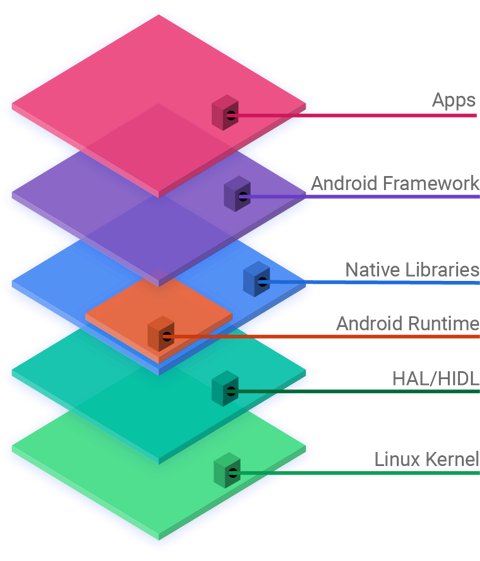
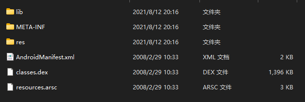

笔者默认读者有一定的逆向能力及面向对象编程能力，将不对部分专业词汇进行解释
本文适合没有Android开发经验的CTF逆向初学者阅读
对于CTF初学者而言，入门Android逆向必定是十分痛苦的一个过程：
- 如何打开Apk文件？Apk是二进制文件吗？
- Android系统是怎么运行Apk文件的？和Windows PE文件差不多吗？
- Android的主流开发语言是Java或Kotlin，但我只学了C，看不懂代码怎么办？
- Apk除了使用Jvm语言开发外，还有其他语言可供开发吗？
时至今日，Android等移动操作系统都采用应用导向模式，这对用户而言十分友好，但对于入门者而言稍显硬核
笔者希望通过本文，帮助初学者了解Android和Android逆向，更愉快的面对CTF题目
如果想深入学习安卓逆向，还是推荐学习一下Android开发知识，能对逆向学习起到很大的帮助
那么，我们先从了解安卓开始吧
一. 认识Android
Android是一种基于Linux 内核和其他开源软件的修改版本的移动操作系统，由一个被称为开放手机联盟的开发者联盟开发，并由Google 提供商业赞助。
作为免费的开源软件，其源代码被称为 Android 开源项目 (AOSP)，主要根据Apache 许可证获得许可。
除了Apple公司，几乎所有主流手机厂商都在使用定制后的Android系统，如MIUI，ColorOS，HarmonyOS等
安卓系统架构如下，简洁明了。当然，如果你没有操作系统相关的知识，这些内容还不急着理解

二. 认识Apk
Apk（Android Package）是安卓的软件包，它不是可执行的二进制文件，而是压缩包
将apk后缀改为zip后缀并解压，我们就能看到apk的文件结构

我解压了一道入门题目作为演示，结构较少，如下：
lib: 储存.so文件，即动态链接库META-INF: 签名校验相关文件res: resource，资源文件manifest: 应用清单，包含应用的部分信息dex: 类文件，我们使用工具反编译apk时，反编译的其实就是dex文件
先来说说manifest： 它是一个应用的大清单：包名，四大组件的声明，申请的权限等等信息都在此给出
Android系统会根据manifest中的声明进行对应的处理，例如在安装应用时告诉你应用所需的权限
接下来是dex文件： dex文件是可执行的二进制文件，也是大多是Android应用的关键
开发者使用Java/Kotlin开发安卓应用，并使用编译器编译为Java Bytecode、Dalvik Bytecode
编译完成后获得的Dalvik Bytecode可以运行在ART（Android Runtime，一种修改后的jvm虚拟机）上
使用反编译器解析Dalvik字节码，获得的代码称作Smali，两者关系类似机器码与汇编
Smali可以进一步生成Java代码，Jvm系语言反编译后生成的Java代码可读性很强，但坏消息是没学过OOP编程的人可能感到难以理解
然后是lib文件夹，这里储存了一些so文件
上文我们提到过，Android应用是否可以使用其它语言开发？答案是可以的，这其中最常用的就是C++
对windows熟悉的读者可能知道dll，so与dll类似，是Linux的动态链接库
一般情况下，lib后的一串字符代表cpu架构，比如x86_64，armv8等
如果不是cpu架构……那你自己google吧
res文件夹也比较重要，这里存放了软件使用的所有资源，如：图片，音频，字符串，应用界面布局等
最后是META-INF文件夹，这里存放着apk签名校验的相关文件
apk虽然是压缩包，但也不是普通的压缩包，需要签名后才能正常安装使用
META-INF保存了签名信息，以供系统读取，系统校验签名无误后才可以正常安装
三. 总结
本文讲了讲Android与Apk的相关内容，很多逆向相关的内容还没有补充
下一篇再说啦（咕咕咕咕咕咕
本文链接：
http://blog.sorrowrain.com/CTF Android逆向入门浅谈（一）/